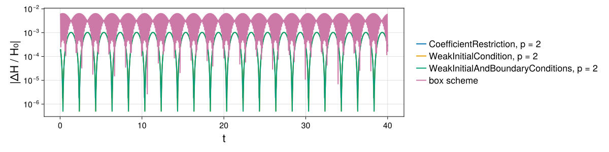

Verification
The observed orders of the B-spline family under its three couplings and of the box scheme, on a manufactured solution u* of the forced wave equation, and the energy error of a long run. The tables and the figure are written by scripts/manual_verification.jl into docs/src/assets/, where they are committed, so the build of this manual reads them and runs no sweep. The ladders, the runs and the long-time settings are those of test/helpers/manufactured.jl, on which test/verification/manufactured.jl and test/verification/long_time_energy.jl assert. Each caption names the commit and the Julia version of the run.
The convergence tables
p is the spline degree and D the number of components of the field. The order of two consecutive runs is the base-2 logarithm of the ratio of their values.
CoefficientRestriction. The L² error of the top trace against u* at t = 1.0 on the joint ladder, expected order p + 1, and the L² difference of consecutive runs on the self-difference ladder, expected order 2p in h. Run on commit 93be018 with Julia 1.13.4.
| ladder | p | D | expected | value 1 | value 2 | order 1–2 | value 3 | order 2–3 |
|---|---|---|---|---|---|---|---|---|
joint nx = 20, 40, 80, h = 1/nx | 1 | 1 | 2 | 2.3903e-03 | 5.9742e-04 | 2.000 | 1.4934e-04 | 2.000 |
self-difference h = 0.1, 0.05, 0.025, 0.0125, nx = 20 | 1 | 1 | 2 | 6.5866e-04 | 1.6514e-04 | 1.996 | 4.1316e-05 | 1.999 |
joint nx = 20, 40, 80, h = 1/nx | 1 | 2 | 2 | 2.9928e-03 | 7.4806e-04 | 2.000 | 1.8701e-04 | 2.000 |
self-difference h = 0.1, 0.05, 0.025, 0.0125, nx = 20 | 1 | 2 | 2 | 7.6868e-04 | 1.9272e-04 | 1.996 | 4.8214e-05 | 1.999 |
joint nx = 20, 40, 80, h = 1/nx | 2 | 1 | 3 | 4.6708e-05 | 5.6737e-06 | 3.041 | 7.0406e-07 | 3.011 |
self-difference h = 0.1, 0.05, 0.025, 0.0125, nx = 20 | 2 | 1 | 4 | 1.6699e-07 | 1.0459e-08 | 3.997 | 6.5406e-10 | 3.999 |
joint nx = 20, 40, 80, h = 1/nx | 2 | 2 | 3 | 5.7019e-05 | 6.9258e-06 | 3.041 | 8.5942e-07 | 3.011 |
self-difference h = 0.1, 0.05, 0.025, 0.0125, nx = 20 | 2 | 2 | 4 | 1.9103e-07 | 1.1965e-08 | 3.997 | 7.4819e-10 | 3.999 |
WeakInitialCondition. The L² error of the top trace against u* at t = 1.0 on the joint ladder, expected order p + 1, and the L² difference of consecutive runs on the self-difference ladder, expected order 2p in h. Run on commit 93be018 with Julia 1.13.4.
| ladder | p | D | expected | value 1 | value 2 | order 1–2 | value 3 | order 2–3 |
|---|---|---|---|---|---|---|---|---|
joint nx = 20, 40, 80, h = 1/nx | 1 | 1 | 2 | 2.5720e-03 | 6.4298e-04 | 2.000 | 1.6074e-04 | 2.000 |
self-difference h = 0.1, 0.05, 0.025, 0.0125, nx = 20 | 1 | 1 | 2 | 6.6276e-04 | 1.6617e-04 | 1.996 | 4.1574e-05 | 1.999 |
joint nx = 20, 40, 80, h = 1/nx | 1 | 2 | 2 | 3.2048e-03 | 8.0122e-04 | 2.000 | 2.0031e-04 | 2.000 |
self-difference h = 0.1, 0.05, 0.025, 0.0125, nx = 20 | 1 | 2 | 2 | 7.7326e-04 | 1.9387e-04 | 1.996 | 4.8503e-05 | 1.999 |
joint nx = 20, 40, 80, h = 1/nx | 2 | 1 | 3 | 4.6711e-05 | 5.6738e-06 | 3.041 | 7.0406e-07 | 3.011 |
self-difference h = 0.1, 0.05, 0.025, 0.0125, nx = 20 | 2 | 1 | 4 | 1.6700e-07 | 1.0460e-08 | 3.997 | 6.5408e-10 | 3.999 |
joint nx = 20, 40, 80, h = 1/nx | 2 | 2 | 3 | 5.7023e-05 | 6.9259e-06 | 3.041 | 8.5942e-07 | 3.011 |
self-difference h = 0.1, 0.05, 0.025, 0.0125, nx = 20 | 2 | 2 | 4 | 1.9103e-07 | 1.1965e-08 | 3.997 | 7.4821e-10 | 3.999 |
WeakInitialAndBoundaryConditions. The L² error of the top trace against u* at t = 1.0 on the joint ladder, expected order p + 1, and the L² difference of consecutive runs on the self-difference ladder, expected order 2p in h. Run on commit 93be018 with Julia 1.13.4.
| ladder | p | D | expected | value 1 | value 2 | order 1–2 | value 3 | order 2–3 |
|---|---|---|---|---|---|---|---|---|
joint nx = 20, 40, 80, h = 1/nx | 1 | 1 | 2 | 2.5720e-03 | 6.4298e-04 | 2.000 | 1.6074e-04 | 2.000 |
self-difference h = 0.1, 0.05, 0.025, 0.0125, nx = 20 | 1 | 1 | 2 | 6.6276e-04 | 1.6617e-04 | 1.996 | 4.1574e-05 | 1.999 |
joint nx = 20, 40, 80, h = 1/nx | 1 | 2 | 2 | 3.2048e-03 | 8.0122e-04 | 2.000 | 2.0031e-04 | 2.000 |
self-difference h = 0.1, 0.05, 0.025, 0.0125, nx = 20 | 1 | 2 | 2 | 7.7326e-04 | 1.9387e-04 | 1.996 | 4.8503e-05 | 1.999 |
joint nx = 20, 40, 80, h = 1/nx | 2 | 1 | 3 | 4.6711e-05 | 5.6738e-06 | 3.041 | 7.0406e-07 | 3.011 |
self-difference h = 0.1, 0.05, 0.025, 0.0125, nx = 20 | 2 | 1 | 4 | 1.6700e-07 | 1.0460e-08 | 3.997 | 6.5408e-10 | 3.999 |
joint nx = 20, 40, 80, h = 1/nx | 2 | 2 | 3 | 5.7023e-05 | 6.9259e-06 | 3.041 | 8.5942e-07 | 3.011 |
self-difference h = 0.1, 0.05, 0.025, 0.0125, nx = 20 | 2 | 2 | 4 | 1.9103e-07 | 1.1965e-08 | 3.997 | 7.4821e-10 | 3.999 |
The box scheme. The L² error of the last level against u* at the grid nodes at t = 1.0 on the space ladder, and the L² difference of consecutive runs on the self-difference ladder, expected order 2 in both. Run on commit 93be018 with Julia 1.13.4.
| ladder | D | expected | value 1 | value 2 | order 1–2 | value 3 | order 2–3 |
|---|---|---|---|---|---|---|---|
space nx = 10, 20, 40, h = 1/640 | 1 | 2 | 4.8763e-03 | 1.1546e-03 | 2.078 | 2.8486e-04 | 2.019 |
self-difference h = 0.1, 0.05, 0.025, 0.0125, nx = 40 | 1 | 2 | 1.0629e-03 | 2.6724e-04 | 1.992 | 6.6906e-05 | 1.998 |
space nx = 10, 20, 40, h = 1/640 | 2 | 2 | 6.5394e-03 | 1.5499e-03 | 2.077 | 3.8231e-04 | 2.019 |
self-difference h = 0.1, 0.05, 0.025, 0.0125, nx = 40 | 2 | 2 | 1.2438e-03 | 3.1272e-04 | 1.992 | 7.8291e-05 | 1.998 |
The long-time energy

long_time_energy.svg: the relative energy error |E_h − E_*| / E_*(0) of Wave at its defaults over ten periods, t ∈ (0, 40.0], at h = 0.05: the three B-spline couplings at p = 2 on nx = 20 space cells, and the box scheme at xstep = 0.05. Run on commit 93be018 with Julia 1.13.4.
The stability bound
The B-spline slab integrator on the wave equation is stable only up to about c·h/Δx ≤ 1, with c the wave speed, h the time step and Δx the width of a space cell; K62 of KNOWN_ISSUES.md records the measurements. The long-time run above is at c·h/Δx = 0.5, and the first rung of the B-spline self-difference ladder, h = 0.1 at nx = 20, is at c·h/Δx = 1, at the bound.
The families with no table
Five families have no convergence table: the multiplier network, NetworkAnsatz; the ELM family, a :last_layer network with TrainedHiddenLayer; the TrialNN family, a network under HardConstraintLifting; the symbolic family, SymbolicAnsatz; and the fixed-boundary network, FixedBoundaryNetwork. Their accuracy is set by the network or by the expression, not by the time step h and the space step Δx, so a table of orders in h and Δx would not measure it. Their tests check the implementation instead: the residual against the gradient of an independent discrete action, the Jacobian against central differences, and an affine control.
The scans and the benchmark matrix
The scripts' benchmark matrix (scripts/run_benchmark.jl) runs every family on the example problems at several resolutions, one process per row, and archives per run the solver's stats, the errors, the energy drift and the wall time; a run that fails or does not converge is a result. The energy scan and the phase-drift scan of the B-spline family are scripts/spline_energy_scan.jl and scripts/spline_phase_drift_scan.jl, and the network family's regularisation scan is a set of rows of the matrix. scripts/README.md says how to run them.